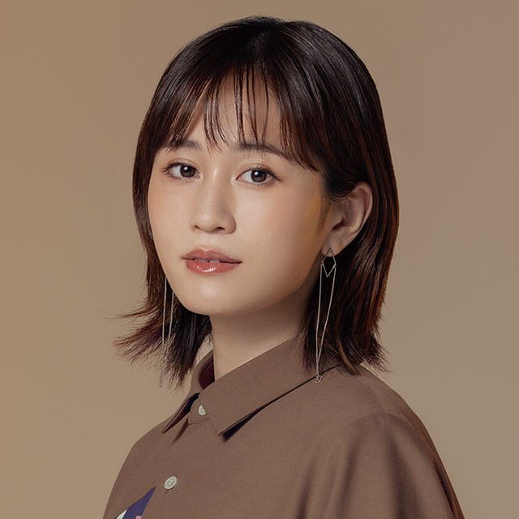
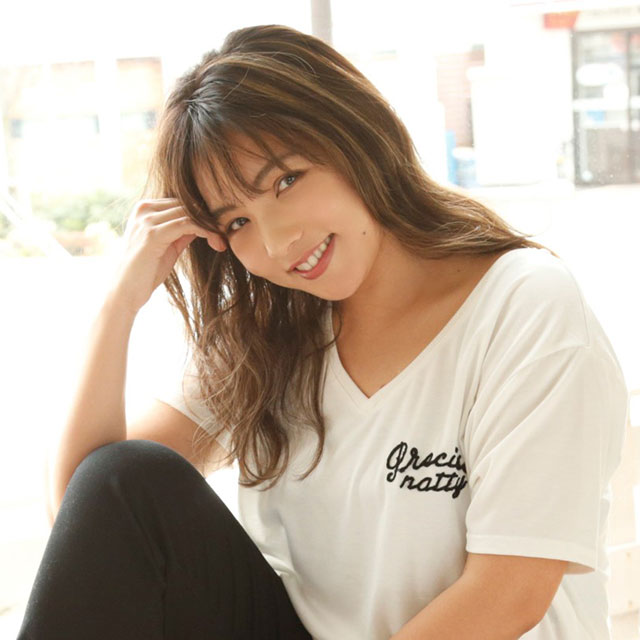
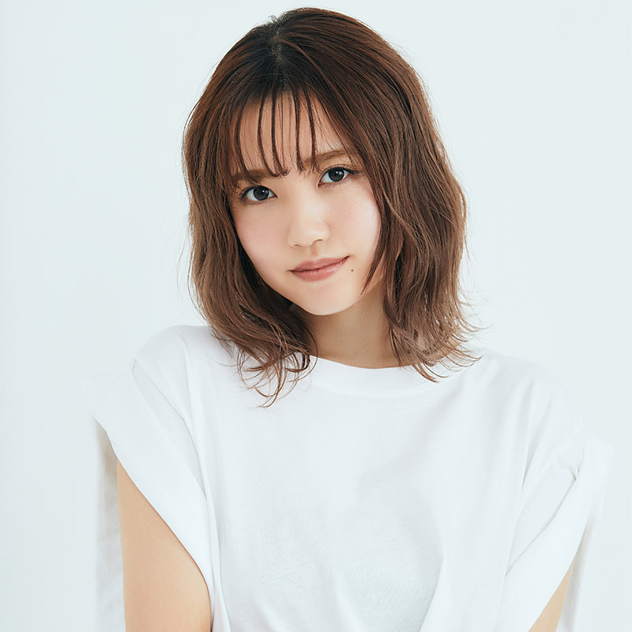
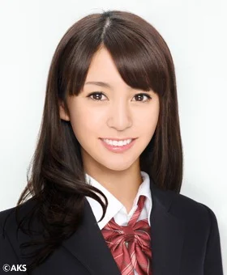
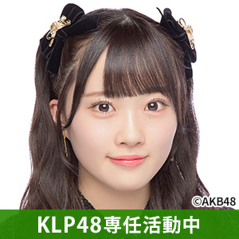
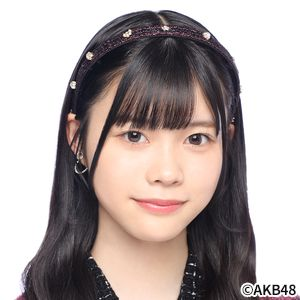
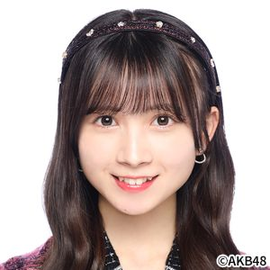
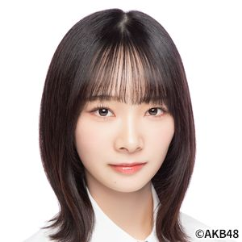

正式メンバー３０人、 研究生１３人、 計 ４３人
13期生（2人）、15期生（3人）、Team８（8人）、ドラ２期生（1人）、16期生（5人）、ドラ３期生（1人）、17期生（10人）
18期研究生生（8人）、19期研究生（5人）
生年月日、（血液型）、出身、在籍期間、チーム歴、愛称、その他（公表時の身長、スリーサイズ）
１期生（全員卒業）2005年12月８日デビュー
- ・板野友美 Tomomi Itano
- 1991年7月3日、A型、神奈川、05年10月→13年8月、A→K、ともちん、154、80・55・78、ホリプロ、ROSY LUCYの代表取締役
- ・宇佐美友紀 Yuki Usami
- 1984年12月6日、埼玉、05年10月→06年3月、A、ゆっきー
- ・浦野一美 Kazumi Urano（SDN481期生移籍・卒業）
- 1985年10月23日、埼玉、05年10月→10年4月、A→B、シンディー
- ・大江朝美 Tomomi Oe
- 1989年6月15日、東京、05年10月→08年11月、A、おーいぇ
- ・大島麻衣 Mai Osima
- 1987年9月11日、千葉、05年10月→09年4月、A、まいまい、ホリプロ
- ・折井あゆみ Ayumi Orii
- 1985年7月20日、長野、05年10月→07年1月、A、あゆ姉
- ・川崎 希 Nozomi Kawasaki
- 1987年8月23日、神奈川、05年10月→09年2月、A、のぞフィス、アンティミスの代表取締役社長
- ・小嶋陽菜 Haruna Kojima
- 1988年4月19日、O型、埼玉、05年10月→17年4月、A→B→A、こじはる、164、80・60・86、mama&son、heart relationの代表取締役CCO
- ・駒谷仁美 Hitomi Komatani（卒業後→SDN483期生加入・卒業）
- 1988年12月16日、埼玉、05年10月→08年11月、A、ひぃちゃん
- ・佐藤由加理 Yukari Sato（SDN481期生移籍・卒業）
- 1988年11月22日、静岡、05年10月→10年5月、A、ゆかりん
- ・篠田麻里子 Mariko Shinoda（1.5期生）
- 1986年3月11日、A型、福岡、06年1月→13年7月、A、麻里子、167、82・57・85、someday
- ・高橋みなみ Minami Takahashi
- 1991年4月8日、AB型、東京、05年10月→16年4月、A、たかみな、初代総監督、148.5、74・56.5・81、mama&son
- ・戸島 花 Hana Tojima（卒業後→SDN483期生加入・卒業）
- 1988年7月11日、埼玉、05年10月→08年11月、A、はな
- ・中西里菜 Rina Nakanishi
- 1988年6月26日、大分、05年10月→08年11月、A、りなてぃん
- ・成田梨紗 Risa Narita
- 1991年3月1日、東京、05年10月→08年11月、A、ナタリー
- ・平嶋夏海 Natsumi Hirajima
- 1992年5月28日、東京、05年10月→12年2月、A→B、なっちゃん、ワンエイトプロモーション
- ・星野みちる Michiru Hoshino
- 1985年11月19日、千葉、05年10月→07年6月、A、ちるちる 
- ・前田敦子 Atuko Maeda
- 1991年7月10日、A型、千葉、05年10月→12年8月、A、あっちゃん、161、76・60・83、株式会社Atsuko
- ・増山加弥乃 （本名 中村加弥乃）Kayano Masuyama
- 1994年2月10日、東京、05年10月→07年11月、A、かやの、スターダストプロモーション
- ・峯岸みなみ Minami Minegishi
- 1992年11月15日、B型、東京、05年10月→21年5月、A→K→B→研究生→4→K、みいちゃん、158、80・60・86、mama&son
- ・渡邊志穂 Shiho Watanabe
- 1987年10月25日、兵庫、05年10月→07年10月、A→B、しほりん
２期生（全員卒業）2006年4月1日デビュー
- ・秋元才加 Sayaka Akimoto
- 1988年7月26日、B型、千葉、06年2月→13年8月、K、さやか、Sayaka Akimoto official Website
- ・今井 優 Yu Imai
- 1985年4月17日、埼玉、06年2月→07年6月、K、ゆう
- ・上村彩子 Ayako Uemura
- 1986年2月7日、埼玉、06年2月→6月、K、あやたん
- ・梅田彩佳 Ayaka Umeda（NMB48移籍・卒業）
- 1989年1月3日、A型、福岡、06年2月→14年4月、K→B、梅ちゃん、TRUSTAR
- ・大島優子 Yuko Oshima
- 1988年10月17日、B型、栃木、06年2月→14年6月、K、優子、太田プロ
- ・大堀 恵 Megumi Ohori（SDN481期生移籍・卒業）
- 1983年8月25日、千葉、06年2月→10年2月、K、めーたん
- ・奥真奈美 Manami Oku
- 1995年11月22日、東京、06年2月→11年4月、K、まぁちゃん
- ・小野恵令奈 Erena Ono
- 1993年11月26日、東京、06年2月→10年9月、K、えれぴょん
- ・河西智美 Tomomi Kasai
- 1991年11月16日、A型、東京、06年2月→13年5月、K→A、とも〜み、ホリプロ
- ・小林香菜 Kana Kobayashi
- 1991年5月17日、B型、東京、06年2月→16年3月、K→B→K、KK
- ・佐藤夏希 Natsuki Sato
- 1990年7月1日、B型、北海道、06年2月→12年11月、K→B→A、Nなっち
- ・高田彩奈 Ayana Takada
- 1988年7月21日、愛知、06年2月→07年6月、K、あやな 
- ・野呂佳代 Kayo Noro（SDN481期生移籍・卒業）
- 1983年10月28日、東京、06年2月→10年2月、K、ノンティー、太田プロ
- ・早野 薫 Kaoru Hayano
- 1992年12月12日、東京、06年2月→09年4月、K、かおりん
- ・増田有華 Yuka Masud
- 1991年8月3日、B型、06年2月→12年12月、K→B、ゆったん、FLAVEentartainment
- ・松原夏海 Natsumi Matsubara
- 1990年6月19日、福岡、06年2月→13年6月、K→A→K、なっつみぃ
- ・宮沢佐江 Sae Miyazawa（SNH48兼SKE48移籍・卒業）
- 1990年8月13日、O型、東京、06年2月→13年6月、K、さえ、ホリプロ
３期生（全員卒業）2007年4月8日デビュー
- ・柏木由紀 Yuki Kashiwagi
- 1991年7月15日、鹿児島、06年12月→2024年4月、B、ゆきりん、WATANABE Entertainment、柏木由紀officialサイト
- ・井上奈瑠 Naru Inoue
- 1991年12月18日、大阪、06年12月→08年9月、B、なるぽん
- ・多田愛佳 Aika Ota（HKT48移籍・卒業）
- 1994年12月8日、埼玉、06年12月→12年10月、B→A、らぶたん
- ・片山陽加 Haruka Katayama
- 1990年5月10日、愛知、06年12月→14年9月、B→A→B、はーちゃん
- ・菊地彩香 Ayaka Kikuti（「菊地あやか」として7期生で復帰）
- 1993年6月30日、東京、06年12月→08年8月、B、あやりん
- ・早乙女美樹 Miki Saotome
- 1991年6月22日、栃木、06年12月→09年4月、B→研究生、みきポム
- ・田名部生来 Miku Tanabe
- 1992年12月2日、滋賀、06年12月→17年7月、B→K→B、たなみん、OMNIA
- ・仲川遥香 Haruka Nakagawa（JLT48移籍・卒業）
- 1992年2月10日、東京、06年12月→12年10月、B→A、はるか、電通インドネシア
- ・仲谷明香 Sayaka Nakaya
- 1991年10月15日、岩手、06年12月→13年3月、B→K→A、なかやん、162、82・67・90、MICHELLE Entertainment
- ・野口玲菜 Reina Noguti
- 1993年4月15日、埼玉、06年12月→09年2月、B、ぐっさん
- ・松岡由紀 Yuki Matsuoka
- 1987年10月7日、神奈川、06年12月→09年2月、B、まつゆき
- ・米沢瑠美 Rumi Yonezawa
- 1991年6月6日、埼玉、06年12月→12年2月、B→K、よねちゃん、「まゆゆ」「ぱるる」の命名者、城田理加の名前でAVデビュー
- ・渡辺麻友 Mayu Watanabe
- 1994年3月26日、埼玉、06年12月→17年12月、B→A→B、まゆゆ
４期生（全員卒業）2007年5月27日合格
- ・大家志津香 Shizuka Oya
- 1991年12月28日、福岡、07年5月→21年12月、A→B→A、しいちゃん、ワタナベエンターテインメント
- ・倉持明日香 Asuka Kuramochi
- 1989年9月11日、神奈川、07年5月→15年8月、K→A→K→B、もっちぃ、ワタナベエンターテインメント
- ・佐藤亜美菜 Amina SAto
- 1990年10月16日、東京、07年5月→14年6月、A→K、あみな、大沢事務所
- ・佐伯美香 Mika Saeki（チームB卒業→バイトAKB加入・契約満了）
- 1989年10月29日、栃木、07年5月→09年8月、B、みかちぃ
- ・中田ちさと Chisato Nakata
- 1990年10月8日、埼玉、07年5月→17年4月、A→K→A、ちーちゃん、Floche Cream
- ・成瀬理沙 Risa Naruse
- 1993年8月13日、埼玉、07年5月→09年8月、K、なるる、「逢坂はるな」と改名しAVデビュー、お笑いコンビ「カミナリ」の竹内まなぶと結婚
- ・藤江れいな Reina Fujie（NMB48移籍・卒業）
- 1994年2月1日、千葉、07年5月→14年4月、A→K→B、れいにゃん、イトーカンパニー
- ・瓜屋 茜 Akane Uriya
- 1992年8月24日、神奈川、07年5月→09年4月、研究生、うりゃ
- ・金子智美 Satomi Kaneko
- 1989年12月22日、愛知、07年5月→11月、研究生、「金松季歩」（かねまつきほ）として、AV女優に転身、エスワン
- ・小塚里菜 Rina Kozuka
- 1993年5月22日、千葉、07年5月→11月、研究生
- ・鈴木菜絵 Nae Suzuki
- 1992年12月18日、埼玉、07年5月→09年1月、研究生
- ・出口 陽 Aki Deguchi（AKB48卒業→SKE481期生加入・卒業）
- 1988年3月14日、AB型、三重、07年5月→11月、研究生、ぴっぴ・あきすん、162、82・57・84、Deguchi Aki Official Web
- ・中西優香 Yuka Nakanishi（SKE481期生移籍・卒業）
- 1989年1月24日、愛知、07年5月→08年8月、研究生、チュンチュン、ソリッド・キューブ
- ・藤本沙羅 Sara Fujimoto（→元9期研究生）
- 1997年3月23日、東京、07年5月→09年1月、研究生
- ・村中聡美 Satomi Muranaka（→元8期研究生）
- 1988年6月5日、千葉、07年5月→09年1月、研究生
- ・吉岡沙葵 Saki Yoshioka
- 1984年9月1日、東京、07年5月→11月、研究生
- ・渡辺茉莉絵 Marie Watanabe
- 1991年1月18日、東京、07年5月→11月、研究生
５期生（全員卒業）2007年10月6日合格
- ・石田晴香 Haruka Ishida
- 1993年12月2日、埼玉、07年10月→16年6月、B→K、はるきゃん、ホリプロ
- ・内田眞由美 Mayumi Uchida
- 1993年12月27日、東京、07年10月→15年8月、K→B、ウッチー、「焼き肉IWA」の店長
- ・北原里英 Rie Kitahara（NGT481期生移籍・卒業）
- 1991年6月24日、愛知、07年10月→15年8月、A→B→K、きたりえ、太田プロ
- ・小原春香 Haruka kohara（SGN481期生移籍・卒業）
- 1988年4月12日、広島、07年10月→10年4月、B→K、はるちゃん、officeきゅるるん
- ・指原莉乃 Rino Sashihara（HKT48移籍・卒業）
- 1992年11月21日、大分、07年10月→12年6月、B→A、さっしー、太田プロ
- ・近野莉菜 Rina Chikano（JKT48移籍・卒業）
- 1993年4月23日、東京、07年10月→14年4月、チカリーナ
- ・中塚智実 Tomomi Nakatsuka
- 1993年6月18日、埼玉、07年10月→13年7月、K→A、ともちゃん（クリス）、De-PRO
- ・仁藤萌乃 Moeno Nito
- 1992年7月22日、東京、07年10月→13年4月、A→K→A、もえの
- ・宮崎美穂 Miho Miyazaki
- 1993年7月30日、O型、東京、07年10月→22年4月、A→B→K→A、みゃお、ホリプロ
- ・有馬優茄 Yuka Arima
- 1991年2月18日、神奈川、07年10月→09年1月、研究生、ありゃま
- ・冨田麻友 Mayu Tomita
- 1993年1月25日、香川、07年10月→09年1月、研究生、まゆ
- ・畑山亜里紗 Arisa Hatakeyama
- 1991年2月11日、東京、07年10月→09年1月、研究生、ありりん


６期生（全員卒業）2008年3月合格
- ・高城亜樹 Aki Takajo
- 1991年10月3日、東京、08年3月→12年10月、13年4月→16年2月、A→B→K、あきちゃ、アイエス・フィールド
- ・野中美郷 Misato Nonaka
- 1991年4月20日、福岡、08年3月→14年4月、K→B、みちゃ、alma
- ・片野友里恵 Yurie Katano
- 1990年4月29日、茨城、08年3月→8月、研究生、ゆりちゃん
- ・西澤沙羅 Sara Nishizawa
- 1992年5月14日、神奈川、08年3月→7月、研究生
７期生（全員卒業）2008年12月合格
- ・岩佐美咲 Misaki Iwasa
- 1995年1月30日、千葉、08年12月→16年3月、A→B→K→B、わさみん、演歌歌手、長良プロ、新曲「マッチ」発売中
- ・菊地あやか Ayaka Kikuti（元3期生）
- 1993年6月30日、東京、08年12月→14年4月、B→K→A、あやりん
- ・小森美果 Mika Komori
- 1994年7月19日、愛知、08年12月→13年6月、B、こもりん
- ・佐藤すみれ Sumire Sato（SKE48移籍・卒業）
- 1993年11月20日、埼玉、08年12月→14年4月、B→A、すーちゃん
- ・前田亜美 Ami Maeda
- 1995年6月1日、東京、08年12月→16年8月、A→K→A、あみん、オスカープロモーション
- ・松井咲子 Sakiko Matsui
- 1990年12月10日、埼玉、08年12月→15年6月、K→A→K、さきこ、someday
- ・石黒莉美 Remi Ishiguro
- 1991年5月23日、東京、08年12月→09年1月、研究生
- ・上遠野瑞穂 Mizuho Katoono（かとおの）
- 1991年11月30日、東京、08年12月→09年6月、研究生、みーたん、後に「愛乙女☆DOLL」に所属し「愛迫みゆ」と改名
- ・鈴木紫帆里 Shihori suzuki（昇格発表後卒業→11期生で復帰・卒業）
- 1994年2月17日、神奈川、08年12月→09年9月、B、しほりん
- ・林 彩乃 Ayano Hayashi
- 1993年5月31日、東京、08年12月→09年7月、研究生、あやのん
８期生（一人も昇格できずに解雇）2009年６月合格
- ・浅居 円 Madoka Asai
- 1991年7月28日、滋賀、09年4月→12月、研究生、まりん
- ・石井彩夏 Ayaka Ishii
- 1991年6月24日、神奈川、09年4月→12月、研究生、あやめろ
- ・石部 郁 Aya Ishibe
- 1991年2月6日、山梨、09年4月→12月、研究生、あやにゃん
- ・今井悠理枝 Yurie Imai
- 1994年4月30日、埼玉、09年4月→10年2月、研究生、ゆりはむ
- ・植木あさ香 Asaka Ueki
- 1995年5月17日、千葉、09年4月→10年7月、研究生、あさぽん
- ・郭グレース Grace Kaku
- 1994年4月29日、埼玉、09年4月→12月、研究生、ぐーたん
- ・小松瑞希 Mizuki Komatsu
- 09年4月→7月、研究生、みっきー
- ・小水七海 Nanami Komizu
- 1995年7月13日、神奈川、09年4月→12月、研究生、こみたん
- ・坂本莉央 Rio Sakamoto
- 1995年6月6日、東京、09年4月→12月、研究生、りっちゃん
- ・佐野友里子 Yuriko Sano
- 1992年1月22日、東京、09年4月→10年5月、研究生、ゆりりん
- ・杉山未来 Miku Sugiyama
- 1995年12月12日、東京、09年4月→12月、研究生
- ・冨手麻妙 Ami Tomite
- 1994年3月17日、神奈川、09年4月→12月、研究生、まみょん
- ・西川七海 Nanami Nisikawa
- 1993年7月3日、東京、09年4月→7月、研究生、ななみん
- ・三木にこる Nikoru Miki
- 1995年6月28日、千葉、09年4月→12月、研究生、にこるん
- ・村中聡美 Satomi Muranaka（元４期研究生）
- 1988年6月5日、千葉、09年4月→12月、研究生、さとみん
９期生（全員卒業）2009年9月20日合格

１０期生（１人CGM48に移籍）2010年3月31日合格
- ・伊豆田莉奈 Rina Izuta（BNK48→CGM48移籍）
- 1995年11月26日、A型、埼玉、10年3月→17年、A→B→4、いずりな、158
- ・阿部マリア（別名義：阿部 瑪利亞） Maria Abe（AKB48 TeamTP移籍・卒業）
- 1995年11月29日、B型、神奈川、10年3月→17年11月、4K、マリア・アベマ、168、WalkGame Corp.(Camerabay)台湾
- ・市川美織 Miori Ichikawa
- 1994年2月12日、埼玉、10年3月→14年4月、4→B、みおりん、プロダクション尾木、FANCYLABO
- ・入山杏奈 Anna Iriyama
- 1995年12月3日、B型、千葉、10年3月→22年3月、4→A、あんにん、160、太田プロ 
- ・加藤玲奈 Rena Kato
- 1997年7月10日、B型、千葉、10年3月→22年2月、4→B→4→B→A、れなっち、161、mama&son
- ・小林茉里奈 Marina Kobayashi
- 1996年2月24日、東京、10年3月→15年8月、A→4→B、まりんちゃん、セント・フォース
- ・仲俣汐里 Shiori Nakamata
- 1992年7月25日、東京、10年3月→13年9月、4→A、なかまったー
- ・藤田奈那 Nana Fujita
- 1996年12月28日、A型、東京、10年3月→19年1月、K→A、なぁな、163.8、ACT JP エンターテイメント
- ・岩崎仁美 Hitomi Iwasaki
- 1996年3月19日、埼玉、10年3月→10月、研究生、ひとみん
- ・金沢有希 Yuki Kanazawa
- 1993年5月1日、北海道、10年3月→11年2月、研究生、ゆうちゃん
１１期生（全員卒業）2010年7月24日合格
- ・川栄李奈 Rina Kawaei
- 1995年2月12日、神奈川、10年7月→15年8月、4→A、りっちゃん、avex management
- ・小嶋菜月 Natsuki Kojima
- 1995年3月8日、A型、千葉、10年7月→18年5月、B→A、なっつん、155
- ・鈴木紫帆里 Shihori Suzuki（元7期研究生）
- 1994年2月17日、神奈川、10年7月→15年5月、B→K、しほりん
- ・名取稚菜 Wakana Natori
- 1995年6月7日、東京、10年7月→15年12月、B→4、わかにゃん
- ・森川彩香 Ayaka Morikawa
- 1996年3月24日、埼玉、10年7月→15年5月、A、あーや（あーやロイド）、164、84・54・80、映画「教科書にない！」シリーズで主演
- ・牛窪沙良 Sara Ushikubo
- 1995年2月15日、東京、10年7月→11年6月、研究生、さらちゃん
- ・岡崎ちなみ Chinami Okazaki
- 1992年5月28日、千葉、10年7月→10月、研究生
- ・川上万里奈 Marina Kawakami
- 1996年5月21日、大阪、10年7月→12月、研究生
- ・豊田早姫 Saki Toyoda
- 1993年9月8日、埼玉、10年7月→10月、研究生、さきび
- ・山口菜有 Nau Yamaguti
- 1994年1月19日、神奈川、10年7月→11年6月、研究生、なうちぃ
１２期生（全員卒業）2011年2月20日合格
- ・大森美優 Miyu Omori
- 1998年9月3日、B型、神奈川、11年2月→23年8月、B→4、みゆぽん、162
- ・佐々木優佳里 Yukari Sasaki
- 1995年8月28日、埼玉、11年2月→24年2月、A→4→A、ゆかるん、STROBO AGENCY
- ・武藤十夢 Tomu Muto
- 1994年11月25日、B型、東京、11年2月→23年3月、K→A→K、とむ、気象予報士、156、生島企画室
- ・岩田華怜 Kren Iwata
- 1998年5月13日、宮城、11年2月→16年3月、4→A、カレン
- ・高橋朱里 Juri Takahashi
- 1997年10月3日、A型、茨木、11年2月→19年5月、4→A→B→4、じゅり、160、UIを起業
- ・田野優花 Yuka Tano
- 1997年3月7日、O型、東京、11年2月→18年8月、4→A→K、たのちゃん、150、YKAgent
- ・平田梨奈 Rina Hirata
- 1998年7月16日、O型、福岡、11年2月→16年8月、K→B→A、ひらりー、160、87・62・95、ダンドル
- ・サイード横田絵玲奈 Erena Saeed Yokota
- 1997年4月15日、東京、11年2月→12年10月、研究生、えれちゃん
- ・鈴木里香 Rika Suzuki
- 1997年1月10日、東京、11年2月→12年3月、研究生、りかちゃん
１２．５期 CGによるバーチャルアイドル
-

- ・江口愛美 Aimi Eguti
- 1995年2月11日、O型、埼玉、11年6月→13年5月、研究生、あいみ、152、44kg、82・55・81
- ・髪型と体（大島優子）・顔の輪郭（高橋みなみ）・眉（渡辺麻友）・目（前田敦子）・鼻（板野友美）・口（篠田麻里子）・声（佐々木優佳里）
１３期生（２人在籍）2011年9月24日合格
- ・岩立沙穂 Saho Iwatate
- 1994年10月4日、B型、神奈川、11年9月→、4→B、さっほー、156.5、 青 ☓白☓ 赤 、TRUSTAR
- ・北澤早紀 Saki Kitazawa
- 1997年6月5日、A型、千葉、11年9月→、4→B、さっきー、151、トキエンタテインメント
- ・篠崎彩奈 Ayana Shinozaki
- 1996年1月8日、B型、埼玉、11年9月→、4→K→A→B、あやなん、156、OMG
- ・村山彩希 Yuiri Murayama
- 1997年6月15日、O型、11年9月→、4、ゆいりー、 赤 ☓ 黄 、エイベックス・アスナロ・カンパニー
- ・茂木 忍 Shinobu Mogi
- 1997年2月16日、千葉、11年9月→24年1月、4→K、もぎちゃん
- ・相笠 萌 Moe Aigasa
- 1998年4月6日、神奈川、11年9月→16年11月、4→K、もえちゃん、レキシントン
- ・梅田綾乃 Ayano Umeta
- 1999年3月20日、東京、11年9月→17年3月、4B、うめたん
- ・大島涼花 Ryouka Oshima
- 1998年10月21日、神奈川、11年9月→17年6月、AB、りょーちゃん（クソガキKSGK）、METEORA
- ・岡田彩花 Ayaka Okada
- 1998年11月6日、A型、東京、11年9月→17年6月、4、あやか、160、SAISON
- ・髙島祐利奈 Yurina Takashima
- 1997年5月24日、愛知、11年9月→14年12月、4、ゆーりん
- ・雨宮舞香 Maika Amemiya
- 1997年6月29日、東京、11年9月→12年8月、研究生、あめちゃん
- ・北 汐莉 Shiori Kita
- 1998年12月1日、兵庫、11年9月→12年8月、研究生、しおり
- ・長谷川晴奈 Haruna Hasegawa
- 1997年7月1日、茨城、11年9月→12年8月、研究生、はせはる
- ・光宗 薫 Kaoru Mitsumune
- 1993年4月26日、大阪、11年9月→12年10月、K、みっつ、フレイヴエンターテインメント
- ・森山さくら Sakura Moriyama
- 1998年4月14日、東京、11年9月→12年8月、研究生、さくら
- ・渡邊寧々 Nene Watanabe
- 1998年1月30日、福島、11年9月→12年8月、研究生、ねねちゃん

１４期生（全員卒業）2012年7月9日合格
- ・岡田奈々 Nana Okada
- 1997年11月7日、神奈川、12年5月→23年4月、4、なぁちゃん、エイベックス・アスナロ・カンパニー
- ・内山奈月 Natsuki Uchiyama
- 1995年9月25日、神奈川、12年5月→16年2月、4→B、なっきー
- ・小嶋真子 Mako Kojima
- 1997年5月30日、O型、東京、12年5月→19年5月、4→K→4、こじまこ、160、サンミュージック
- ・西野未姫 Miki Nishino
- 1999年4月4日、O型、静岡、12年5月→17年3月、4、みきちゃん、ツインプラネット
- ・橋本 耀 Hikari Hashimoto
- 1997年6月17日、神奈川、12年5月→15年8月、4→B、ひかり
- ・前田美月 Mitsuki Maeda
- 1998年10月5日、東京、12年5月→15年8月、4、みつき
１５期生（３人在籍）2013年4月30日合格
- ・市川愛美 Manami Ichikawa
- 1999年8月26日、A型、東京、13年1月→23年8月、AK、まなみ、157
- ・込山榛香 Haruka Komiyama（卒業発表をしている）
- 1998年9月12日、B型、千葉、13年1月→、4→K→A、こみはる、154、 ピンク ☓ ライトグリーン 、ディープスキル
- ・佐藤妃星 Kirara Sato
- 2000年8月11日、B型、千葉、13年1月→23年9月、4、きぃちゃん、150、クロコダイル
- ・谷口めぐ Megu Taniguti
- 1998年11月12日、A型、13年1月→24年5月、A→B→4、めぐたん、161、A.M.Entertainment
- ・福岡聖菜 Seina Fukuoka
- 2000年8月1日、O型、神奈川、13年1月→、B→A、せいちゃん、158、 青 ☓ 白 、トキエンタテインメント
- ・向井地美音 Mion Mukaichi
- 1998年1月29日、O型、埼玉、13年1月→、4→K→A、みーおん、150、 ピンク ☓ 赤 、３代目総監督、Mama&Son
- ・湯本亜美 Ami Yumoto
- 1997年10月3日、O型、埼玉、13年1月→23年10月、K、ゆあみ、156、style office
- ・飯野 雅 Miyabi Iino
- 1997年9月29日、B型、東京、13年1月→18年1月、A→4、みやび、163.5
- ・大川莉央 Rio Okawa
- 2001年3月1日、東京、13年1月→18年12月、4、りおりん
- ・大和田南那 Nana Owada
- 1999年9月15日、A型、千葉、13年1月→17年3月、B→A、なーにゃ、159、◯◯◯entertainment
- ・達家真姫宝 Makiho Tatsuya
- 2001年10月9日、B型、東京、13年1月→20年12月、A→B→4、まきちゃん、165、83・63・87、花いろは、トイプラ
- ・土保瑞希 Mizuki Tsuchiyasu
- 1996年10月5日、O型、大阪、13年1月→15年8月、4、みずき、157.5

ドラフト１期生（全員卒業）2013年11月10日に指名
- ・下口ひなな Hinana Shimoguchi
- 2001年7月19日、O型、千葉、14年1月→24年2月、K、ひなな、167、office minimi
- ・川本紗矢 Saya Kawamoto
- 1998年8月31日、B型、北海道、14年1月→20年8月、B→4、さやや、157、84・62・87、A-music
- ・後藤萌咲 Moe Goto
- 2001年5月20日、O型、愛知、14年1月→19年8月、K→B、もえきゅん、171
- ・田北香世子 Kayoko Takita
- 1997年2月13日、O型、千葉、14年1月→22年2月、A→B、かよよん、155、プリュ
- ・西山怜那 Rena Nishiyama
- 2001年1月14日、O型、青森、14年1月→15年12月、A、にっすぃー、151
- ・横島亜衿 Aeri Yokoshima
- 1999年12月17日、B型、愛知、14年1月→17年6月、B、あえりん、167、
大組閣移籍組（全員卒業）2014年2月24日
- ・中西智代梨 Chiyori Nakanishi（HKT48 1期生）
- 1995年5月12日、O型、福岡、14年4月→23年8月、A、ちょり、160、TRUSTAR
- ・小笠原茉由 Mayu Ogasawara（NMB48 1期生）
- 1994年4月11日、A型、大阪、14年4月→16年12月、B→A、まーちゅん、151
- ・木﨑ゆりあ Yuria Kizaki（SKE48 3期生）
- 1996年2月11日、O型、愛知、14年4月→17年9月、4B、ゆりあ、156、am合同会社
- ・野澤玲奈 Rena Nozawa（JKT48 1期生）
- 1998年5月6日、B型、東京、13年6月→19年5月、K→B、レナチャン、168
大人AKB（2014年4月12日〜9月1日）
江崎グリコのアイス『パピコ』のキャンペーンとタイアップ。当商品のテレビコマーシャルで、他のAKB48メンバーとともに出演し「センター」を務める「30歳以上」のメンバーを選ぶ。
- ・塚本まり子 Mariko Tsukamoto
- 1976年7月16日、B型、まりり、154、78・58・82
バイトAKB
第1期：アルバイト求人情報サイト『バイトル』とのとタイアップ企画
第2期：フジテレビ系「淳・ぱるるの◯◯バイト！」のMCの島崎遥香が選考に関わったことから「ぱるる選抜」とも呼ばれる
第1期：2014年8月〜2015年2月
赤坂美咲、阿部叶夢、荒木実波、荒木琳袈、飯倉早織、生田優香、伊田有紀、一色嶺奈、梅澤愛優香、海老沢恵美、大野彩乃、尾形穂菜美、荻野由佳 、方伊儀まどか、勝又彩央里、上谷沙弥、川口真実、川村真穂、菊地智美、木下涼風、木下真佑、日下部愛菜、黒沢綾佳、小池優香、小泉里奈、齋藤梨奈、佐伯美香、沢木沙耶、柴田優衣、鈴木優民、清司麗菜、髙木茉白、高橋希良、竹内美沙樹、千田夢乃、千代田唯、中川里菜、中村優香、長坂亜利沙、成松美沙、西潟茉莉奈、福井有彩、藤江桃子、松浦夏穂、 松岡はな、松本和夏、宮﨑美希、女鹿椰子、八代嘉菜、山内亜紀
第2期：（ぱるる選抜）2016年3月〜8月
飯田有香（お披露目前に辞退）、繁藤冬佳、日出有香
ピックアップメンバー
- ・一色嶺奈 Rena Issiki
- 第2回AKBグループドラフト会議においてSKE48チームSから指名
- ・荻野由佳 Yuka Ogino
- 第2回AKBグループドラフト会議においてNGT48から指名、生島企画室
- ・日下部愛菜 Aina Kusakabe
- NGT48第1期生最終オーディションに合格
- ・佐伯美香（元4期生）Mika Saeki
- バイトAKB活動終了後にAKS総務部（現在→株式会社Vernalossom ヴァーナロッサム）で勤務
- ・柴田優衣 Yui Shibata
- 第2回AKBグループドラフト会議においてNMB48チームMから指名
- ・清司麗菜 Reina Seiji
- NGT48第1期生最終オーディションに合格
- ・高橋希良 Kira Takahashi
- 第2回AKBグループドラフト会議においてAKB48木崎チームBから指名
- ・西潟茉莉奈 Marina Nishigata
- 第2回AKBグループドラフト会議においてNGT48から指名
- ・松岡はな Hana Mtsuoka
- 第2回AKBグループドラフト会議においてHKT48から指名
Team ８（８人在籍、１人移籍）2014年4月3日
- ［北海道］・坂口渚沙 Nagisa Sakaguchi
- 2000年12月23日、A型、北海道、14年4月→23年8月、8→8/B→8/4→8/B→B、なぎ、149、Sizuk Entertainment
- ［青森県］・横山結衣 Yui Yokoyama
- 2001年2月22日、O型、14年4月→21年11月、8、ヨコちゃん、160、充s
- ［秋田県］・谷川聖 Hijiri Tanikawa
- 2000年12月26日、A型、秋田、14年4月→19年5月、8→8/A、ひじりん、160
- ・布谷梨琉 Riru Nunoya
- 2003年2月14日、B型、19年10月→20年9月、171
- ［岩手県］・佐藤七海 Nanami Sato
- 2000年1月19日、A型、岩手、14年4月→19年9月、8、ななみん、162、プロモーションアトラクト
- ［山形県］・早坂つむぎ Tsumugi Hayasaka
- 2001年5月12日、B型、山形、14年4月→18年4月、8、つっちゃん、163.5
- ・御供茉白 Masiro Mitomo
- 2005年11月25日、AB型、山形、18年8月→22年12月、まっちゃん、158
- ［宮城県］・佐藤朱 Akari Sato
- 1996年11月9日、A型、宮城、14年4月→21年3月、8、あかりん、青二プロダクション
- ［福島県］・舞木香純 Kasumi Mougi
- 1997年4月28日、O型、福島、14年4月→18年2月、8、かすみん、162.7
- ・長谷川百々花 Momoka Hasegawa
- 2006年12月14日、8、159、Mama&Son
- ・伊藤きらら Kirara Ito
- 2004年5月19日、AB型、8、18年4月→19年8月、149
- ［茨城県］・岡部麟 Rin Okabe
- 1996年11月7日、茨城、14年4月→24年4月、8→8/A→A、りんりん、159、ホリプロ
- ［栃木県］・本田仁美 Hitomi Honda
- 2001年10月6日、A型、14年4月→24年1月、8、ひぃちゃん、158、iNKODE
- ［群馬県］・清水麻璃亜 Maria Shimizu
- 1997年9月29日、A型、群馬、14年4月→23年8月、8→8/A→A、まりあ、159、YKAgent
- ［埼玉県］・髙橋彩音 Ayane Takahashi
- 1997年12月30日、B型、14年4月→、8→8/4→8/K→K、あやね、153、 水色 ☓ 赤 、アリゲータ
- ［千葉県］・吉川七瀬 Nanase Yoshikawa
- 1998年7月21日、A型、14年4月→、8→8/4→4、ななせ、163、セント・フォース
- ［東京都］・小栗有以 Yui Oguri
- 2001年12月26日、AB型、東京、14年4月→、8→8/A→8/B→B、ゆいゆい、163、 黄 ☓ ピンク 、ゼスト
- ［神奈川県］・小田えりな Erina Oda
- 1997年4月25日、A型、神奈川、14年4月→24年4月、8、おだえり、166、YKAgent
- ［新潟県］・佐藤栞 Shiori Sato
- 1998年2月3日、O型、新潟、14年4月→19年6月、8→8/B、しおりん、158.3
- ・塩原香凛 Karin Shiobara
- 2005年3月27日、AB型、新潟、19年10月→20年9月、かりんりん、161
- ［山梨県］・左伴彩佳 Ayaka Hidaritomo
- 1998年7月29日、A型、山梨、14年4月→23年7月、8→8/K→8/B→B、ひだあや、155、MR8
- ［愛知県］・藤村菜月 Natsuki Fujimura
- 1997年5月25日、O型、愛知、14年4月→16年4月、8、ナチュ、159、
- ・歌田初夏 Hatsuka Utada
- 2002年7月8日、A型、愛知、16年6月→23年7月、8、はっつ、159
- ［静岡県］・横道侑里 Yuri Yokomichi
- 2000年10月23日、A型、静岡、8、14年4月→19年5月、ゆり、150.2、
- ・鈴木優香 Yuka Suzuki
- 2000年8月15日、静岡、19年10月→21年9月、8、162、85・60・90
- ［岐阜県］・奥洞千捺 Chinatsu Okubora
- 1998年9月10日、O型、岐阜、14年4月→6月、8、ちっぴ
- ・服部有菜 Yuna Hattori
- 2001年3月30日、岐阜、14年7月→23年7月、8→8/B→8/K→K、ゆうな
- ［三重県］・山本亜依 Ai Yamamoto
- 1995年8月31日、B型、三重、14年4月→16年5月、8、あいぽん、159
- ・野田陽菜乃 Hinano Noda
- 2004年2月15日、A型、三重、16年6月→19年5月、8→8/4、ひなのん
- ・松村美紅 Miku Matsumura
- 2004年2月7日、A型、三重、19年10月→21年4月、8、みっつん、151
- ［富山県］・橋本陽菜 Haruna Hashimoto
- 2000年5月25日、A型、14年4月→、8→8/K→8/B→B、はるpyon、150、 ピンク ☓ 白 、DH
- ［石川県］・北玲名 Reina Kita
- 1996年4月7日、A型、石川、14年4月→16年9月、8、れなな、158
- ・平野ひかる Hikaru Hirano
- 2003年1月29日、O型、石川、16年12月→23年4月、8、ひか、153
- ［福井県］・長久玲奈 Kurena Cho
- 2000年5月11日、O型、福井、14年4月→19年2月、8、くれにゃん、166、
- ・坂川陽香 Hiyuka Sakagawa
- 2006年10月7日、O型、福井、19年12月→、8、ひゆか、160.3、 赤 ☓ オレンジ 、DH
- ［長野県］・近藤萌恵里 Moeri Kodo
- 1997年4月25日、A型、長野、14年4月→16年10月、8、もえりん、158
- ・髙橋彩香 Sayaka Takahashi
- 2001年11月22日、O型、長野、16年12月→23年8月、8→8/4→8/A→A、たかさや・さやりん、160、ZETT
- ［大阪府］・永野芹佳 Serika Nagano
- 2001年3月17日、O型、大阪、14年4月→、8→8/4→8/A→A、せりちゃん、158、 白 ☓ 白 ☓ 白 、TRUSTAR
- ［京都府］太田奈緒 Nao Ota
- 1994年12月5日、AB型、京都、14年4月→19年12月、8→8/B、なお、159.6、ジャパン・ミュージックエンターテインメント
- ［兵庫県］・山田菜々美 Nanami Yamada
- 1999年2月9日、B型、兵庫、14年4月→19年6月、8→8/A、山田、156.1
- ・福留光帆 Mitsuho Fukutome
- 2003年10月22日、A型、兵庫、19年10月→22年7月、153、プライム
- ［和歌山県］・山本瑠香 Ruka Yamamoto
- 2000年10月10日、O型、和歌山、14年4月→20年6月、8→8/B、るか、156、
- ［奈良県］・大西桃香 Momoka Onishi
- 1997年9月20日、B型、奈良、14年4月→24年2月、8→8/4、おおにし、アリゲータ
- ［滋賀県］・濵咲友菜 Sayuna Hama
- 2001年8月20日、A型、滋賀、14年4月→23年4月、8、はまちゃん、148.5、スペースクラフト・エージェンシー
- ［鳥取県］・中野郁海 Ikumi Nakano
- 2000年8月14日、鳥取、14年4月→19年5月、いくみん、167、アリゲータ
- ・徳永羚海 Remi Tokunaga
- 2006年10月1日、O型、鳥取、19年10月→、8→8/B→B、れみたん、158.7、 ピンク ☓ 青 、DH
- ［島根県］・阿部芽唯 Mei Abe
- 2001年2月9日、A型、島根、14年4月→17年8月、8、めい、157.4
- ・奥原妃奈子 Hinako Okuhara
- 2003年11月18日、O型、島根、17年11月→23年9月、8→8/K→K、ひーな、153
- ［岡山県］・人見古都音 Kotone Hitomi
- 2001年1月19日、A型、岡山、14年4月→19年5月、8→8/A、こっちゃん、166
- ・蒲地志奈 Yukina Kamachi
- 2000年1月22日、A型、岡山、19年10月→21年6月、ゆっきーな・ゆきな、159.2
- ［広島県］・谷優里 Yuri Tani
- 1999年7月19日、AB型、広島、14年4月→17年6月、ゆうりぃ・ちゃんたーに、152
- ・奥本陽菜 Hinano Okumoto
- 2003年10月9日、O型、広島、17年9月→22年3月、8→8/K、のんのん、170
- ［山口県］・下尾みう Miu Shitao
- 2001年4月3日、A型、山口県、14年4月→、8→8/A→8/4→4、みう、163 、 白 ☓ 紫 、Superball
- ［徳島県］・濱松里緒菜 Riona Hamamatsu
- 1995年7月28日、O型、徳島、14年4月→17年7月、Riona、152、
- ・春本ゆき Yuki Harumoto
- 1999年12月24日、徳島、17年9月→21年10月、8→8/K、ゆき、156
- ［香川県］・行天優莉奈（KLP48に移籍）
- 1999年3月14日、O型、香川、14年4月→、8→8/4→4、ゆりな、162、DRELLA
- ［愛媛県］・高岡薫 Kaoru Takaoka
- 2000年11月29日、A型、愛媛、14年4月→23年8月、8→8/4→4、かおるんば、152、R-UP
- ［高知県］・廣瀬なつき Natsuki Hirose
- 1997年6月9日、O型、高知、14年4月→18年3月、8、なっちゃん、161.8
- ・立仙愛理 Airi Rissen
- 1999年3月18日、A型、高知、18年4月→21年3月、8、りっせん、160、78・58・84
- ［福岡県］・森脇由衣 Yui Moriwaki
- 1998年2月28日、A型、福岡、14年4月→15年1月、ゆいぴょん・ゆい、155
- ・吉田華恋 Karen Yoshida
- 2002年8月27日、O型、福岡、15年4月→23年10月、8→8/A→8/4→4、かれん、161
- ［佐賀県］・福地礼奈 Rena Fukuchi
- 1996年5月2日、O型、佐賀、14年4月→17年5月、8、ぺな
- ・川原美咲 Misaki Kawahara
- 2002年4月3日、A型、佐賀、17年8月→23年8月、8→8/B→8/4→4、みっさー、155
- ［長崎県］・岩﨑萌花 Moeka Iwasaki
- 2000年4月24日、O型、長崎、14年4月→16年4月、8、もえたん、164
- ・寺田美咲 Misaki Terada
- 1999年12月28日、A型、長崎、16年6月→19年10月、8→8/K、みさっきー、153.5
- ・尾上美月 Mizuki Onoue
- 2000年5月22日、B型、長崎、19年11月→21年7月、8、おみづき、161
- ［熊本県］・倉野尾成美 Narumi Kuranoo
- 2000年11月8日、A型、熊本、14年4月→、8→8/K→8/4→4、なる、152、4代目総監督、 赤 ☓ 緑 、DH
- ［大分県］・吉野未優 Miyu Yoshino
- 2001年2月16日、AB型、大分、14年4月→17年1月、みゆゆん、156
- ・山田杏華 Kyouka Yamada
- 2002年11月3日、A型、大分、17年3月→23年12月、8→8/B→B、きょうか、153
- ［宮崎県］・谷口もか Moka Yaguti
- 2001年5月28日、O型、宮崎、14年4月→18年11月、もか、150
- ・上見天乃 Sorano Uemi
- 2001年7月15日、AB型、宮秋、19年10月→23年10月、8→8/K→K、そらのん、157.3
- ［鹿児島県］・下青木香鈴 Karin Shimoaoki
- 2000年10月28日、A型、鹿児島、14年4月→18年8月、かりん、148.3
- ・藤園 麗 Rei Fujizono
- 2005年1月18日、O型、鹿児島、18年10月→23年5月、8→8/B→B、れいちゃん、149.9、アイ・エヌ・ジー
- ［沖縄県］・宮里莉羅 Rira Miyazato
- 2002年3月30日、O型、沖縄、14年4月→21年7月、8→8/4、らんりー


ドラフト２期生(１人在籍)2015年5月10日指名
- ・千葉恵里 Erii Chiba
- 2003年10月27日、B型、神奈川、15年5月→、4→A、えりい・バーチー・ハマのエリイ、165 黄 ☓ 青 、充s
- ・山邊歩夢 Ayu Yamabe
- 2002年2月3日、B型、千葉、15年5月→23年10月、B→K、あゆ、154
- ・久保怜音 Satone Kubo
- 2003年11月20日、O型、神奈川、15年5月→22年3月、K→B、さとぴー、160
- ・西川怜 Rei Nishikawa
- 2003年10月25日、B型、東京、15年5月→22年3月、B→A、れい、161
- ・樋渡結依 Yui Hiwatashi
- 2000年4月30日、A型、埼玉、15年5月→19年11月、A→B、ひーわたん、152、76・56・80、スペースクラフト
- ・高橋希良 Kira Takahashi（元バイトAKB）
- 2001年1月14日、O型、東京、15年5月→17年4月、B、きらりん、158、トイプラ
- ・野村奈央 Nao Nomura
- 1999年8月10日、A型、愛知、15年5月→17年8月、元チームKドラフト研究生、159
台湾留学生（卒業）2015年8月6日
- ・馬嘉伶（真楪伶） Macharin
- 1996年12月21日、O型、台湾・台中市、2016年2月→24年2月、B→4、まちゃりん、158、CANVAS
１６期生（５人在籍、２人移籍）2016年12月8日にお披露目
- ・浅井七海 Nanami Asai
- 2000年5月20日、O型、神奈川、16年12月→24年1月、4→B、なーみん、167、StarRise
- ・黒須遥香 Haruka Kurosu（KLP48に移籍）
- 2001年2月28日、O型、埼玉、16年12月→24年5月、4、はーちゃん、DH
- ・佐藤美波 Minami Sato
- 2003年8月3日、O型、神奈川、16年12月→24年7月、A→B、さとみな
- ・鈴木くるみ Kurumi Suzuki
- 2004年9月2日、A型、東京都、16年12月→、A→B、くるるん、153.8、 紫 ☓ 白 、DH
- ・田口愛佳 Manaka Taguti
- 2003年12月12日、神奈川、16年12月→、まなか、154.5、 赤 ☓ 赤 、DH
- ・長友彩海 Ayami Nagatomo
- 2000年11月2日、O型、神奈川県、16年12月、あやみん、161、 黄 ☓ 水 、DH
- ・道枝咲 Saki Michieda
- 2003年12月20日、B型、神奈川、16年12月→23年9月、A、さきぽん、163、アステールオフィス
- ・武藤小麟 Orin Muto
- 2000年7月22日、AB型、東京都、16年12月→、K→A、おりん、153、 水 ☓ 濃いピンク 、生島企画室
- ・山内瑞葵 Mizuki Yamauchi
- 2001年9月20日、O型、東京都、16年12月→、4→K、ずっきー、163、 ピンク ☓ 黄 、とまりぎ 
- ・山根涼羽 Suzuha Yamane（KLP48に移籍）
- 2000年8月11日、A型、兵庫、16年12月→24年5月、ずんちゃん、158、DH
- ・稲垣香織 Kaori Inagaki
- 1997年10月31日、B型、岡山、16年12月→22年12月、4→B、かおり、159
- ・田屋美咲 Misaki Taya
- 2004年7月14日、東京、16年12月→19年4月、4、たっちゃん、154.2
- ・本間麻衣 Mai Honma
- 2002年9月6日、O型、東京、16年12月→21年10月、4、まいちゃん、169
- ・前田彩佳 Ayaka Maeda
- 2000年12月18日、O型、神奈川、16年12月→21年3月、A、あやか、158
- ・安田叶 Kana Yasuda
- 2002年3月11日、A型、埼玉、16年12月→22年3月、K、かなぶん、115.2
- ・梅本和泉 Izumi Umemoto
- 1998年10月16日、A型、山口、16年12月→18年11月、研究生、いずみん、ジャストプロ
- ・庄司なぎさ Nagisa Shoji
- 2000年10月29日、A型、北海道、16年12月→18年11月、研究生、なぎゅ、154
- ・野口菜々美 Nanami Noguti
- 2003年9月17日、B型、神奈川、16年12月→17年3月、153
- ・播磨七海 Nanami Harima
- 2004年8月2日、A型、千葉県、16年12月→19年5月、研究生、はりまちゃん、150


ドラフト３期生（１人在籍）2018年1月21日指名
- ・石綿星南 Sena Ishiwata
- 2002年2月22日、O型、神奈川、18年1月→23年8月、4→B、せなたん、146.5、「星の宮せな」の名で活動、∴ヒロイン転生
- ・大竹ひとみ Hitomi Otake
- 1999年6月27日、千葉、18年1月→24年1月、B→A、ちゃけ、155、
- ・大盛真歩 Maho Oomori
- 1999年12月5日、B型、茨城、18年1月→、B、まほぴょん、165、 薄いピンク ☓ 白 、DH
- ・岡田梨奈 Rina Okada
- 1999年7月27日、A型、埼玉、18年1月→23年10月、K→4、おかりな、162
- ・小林蘭 Ran Kobayashi
- 2003年10月7日、O型、大阪、18年1月→23年5月、K、らんちゃん・らんたん、159
- ・齋藤陽菜 Haruna Saito
- 2004年5月24日、A型、栃木、18年1月→24年1月、B→A、はーたん、156
- ・多田京加 Kyouka Tada
- 1999年8月19日、B型、福井、18年1月→23年9月、4、きょうか・きょん・多田先輩、Future Base
- ・永野恵 Megumi Nagano
- 2004年3月22日、O型、神奈川、18年1月→23年3月、K、めぐたん、154
- ・吉橋柚花 Yuzuka Yoshihashi
- 1999年12月29日、A型、千葉、18年1月→23年12月、ゆず、155
- ・蔵本美結 Miyuu Kuramoto
- 2001年5月21日、埼玉、18年1月→22年3月、4、くらら・みゆう、160、YKAgent
- ・古川夏凪 Nazuna Furukawa
- 2003年8月21日、B型、北海道、18年1月→22年3月、A、なづなん・古川、154.6
- ・本田そら Sora Honda
- 1999年2月26日、A型、熊本、18年1月→21年5月、A、そらちゃん、154、Future Base
- ・矢作萌夏 Moeka Yahagi
- 2002年7月5日、O型、埼玉、18年1月→20年2月、K、もえか・はぎもえ・もえにゃ等、シンガーソングライター
- ・勝又彩央里 Saori Katsumata［元バイトAKB］
- 2000年10月31日、A型、静岡、18年1月→19年6月、研究生、さおりん
- ・神山莉穂 Riho Kamiyama
- 2003年8月20日、A型、東京、18年1月→10月、研究生、148
- ・佐藤詩織 Shiori Sato
- 2001年7月22日、北海道、18年1月→19年11月、研究生、163
- ・末永佑月 Yuzuki Suenaga
- 2005年11月13日、AB型、東京、18年1月→20年11月、研究生、ゆづちゃん、161
- ・原澤音妃 Otohi Harasawa
- 2001年10月12日、A型、東京、18年1月→8月、研究生
１７期生（１０人在籍）2022年5月4日合格
- ・太田有紀 Yuki Oota
- 2004年3月27日、O型、神奈川、22年5月→、ゆきたん、157、 水色 ☓ 紫 、DH
- ・小濱心音 Kokone Kohama（卒業発表をしている）
- 2007年2月12日、北海道、22年5月→、こっこ、160、 黄 ☓ 水色 、DH
- ・佐藤綺星 Airi Sato
- 2004年6月24日、B型、千葉、22年5月→、あいちゃん、156、 赤 ☓ 白 、DH
- ・橋本恵理子 Eriko Hashimoto
- 2006年4月16日、B型、大阪、22年5月→、えりちゃん、156、 赤 ☓ 黄 、DH 
- ・畠山希美 Nozomi Hatakeyama
- 2008年1月25日、O型、埼玉、22年5月→、のんちゃん、159、 紫 ☓ 青 、DH
- ・平田侑希 Yuki Hirata
- 2002年9月3日、A型、埼玉、22年5月→、ゆき、157、 白 ☓ 紫 、DH
- ・布袋百椛 Moka Hotei
- 2004年、O型、兵庫、22年5月→、ほてちゃん、151、 赤 ☓ ピンク 、DH
- ・正鋳真優 Mayuu Masai
- 2005年3月1日、B型、埼玉、22年5月→、まゆうちゃん、154、 白 ☓ 白 、DH 
- ・水島美結 Miyuu Mizushima
- 2003年11月12日、A型、北海道、22年5月→、みずみん、157、 水色 ☓ ピンク 、DH
- ・山崎 空 Sora Yamazaki
- 2004年5月13日、B型、東京、22年5月→、そらら、152、 紫 ☓ ピンク 、DH
- ・長谷川新奈 Niina Hasegawa
- 2001年8月8日、神奈川、22年5月→8月、にいなん、

１８期研究生（８人在籍）2023年4月9日合格
- ・秋山由奈 Yuna Akiyama
- 2005年12月12日、A型、千葉県、23年4月→、ゆなちゃん、158、 水色 ☓ 水色 、DH
- ・新井彩永 Sae Arai
- 2005年10月5日、B型、東京、23年4月→、さえちゃん、162、 黄 ☓ 黄 、DH
- 工藤華純 Kasumi Kudo
- 2005年6月15日、O型、大分、23年4月→、かすみん、159、 赤 ☓ 緑 、DH
- ・久保姫奈乃 Hinano Kubo
- 2006年2月2日、A型、長野、23年4月→、ちゃんひな、163、 濃いピンク ☓ 薄いピンク 、DH
- ・迫由芽実 Yumemi Sako
- 2006年2月5日、埼玉、23年4月→、ゆめみん、162、 白 ☓ 水色 、DH 
- ・成田香姫奈 Kohina Narita
- 2004年3月3日、AB型、北海道、23年4月→、こひ、158、 紫 ☓ 黄 、DH
- ・八木愛月 Azuki Yagi
- 2005年3月22日、東京、23年4月→、あず、159、 ピンク ☓ 黄 、DH
- ・山口結愛 Yui Yamaguti
- 2009年3月8日、A型、長崎、23年4月→、ゆいち、158、 赤 ☓ オレンジ 、DH

１９期生研究生（５人在籍）2024年3月17日合格
- ・伊藤百花 Momoka Ito
- 2003年12月6日、A型、埼玉、23年4月→、いともも、157、 薄いピンク ☓ 薄いピンク 、DH
- ・奥本カイリ Kairi Okumoto
- 2007年1月27日、O型、東京、23年4月→、カイリ、155.5、 水色 ☓ 青 、DH
- ・川村結衣 Yui Kawamura
- 2006年6月18日、A型、北海道、23年4月→、かわゆい、155、 赤 ☓ 紫 、DH
- ・白鳥沙怜 Sari Shiratori
- 2010年9月10日、A型、東京、23年4月→、さりい、160、 濃いピンク ☓ 白 、DH
- ・花田藍衣 Mei Hanada
- 2005年6月5日、O型、神奈川、23年4月→、めいめい、152、 黄 ☓ 白 、DH